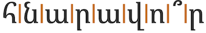
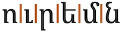

This page brings together basic information about the Armenian script and its use for the Armenian language. It aims to provide a brief, descriptive summary of the modern, printed orthography and typographic features, and to advise how to write Armenian using Unicode. The transcriptions reflect Eastern Armenian usage, unless otherwise noted
Sample
Հոդված 1 Բոլոր մարդիկ ծնվում են ազատ ու հավասար իրենց արժանապատվությամբ ու իրավունքներով։ Նրանք ունեն բանականություն ու խիղճ և միմյանց պետք է եղբայրաբար վերաբերվեն։
Հոդված 2 Ամեն ոք ունի այս Հռչակագրում բերված բոլոր իրավունքներն ու ազատությունները առանց որևէ խտրության՝ հիմնված ցեղային, մաշկի գույնի, սեռի, լեզվի, կրոնի, քաղաքական կամ այլ համոզմունքների, ազգային կամ սոցիալական ծագման, ունեցվածքի, դասային պատկանելության կամ որևէ այլ կարգավիճակի վրա։ Ավելին, ոչ մի խտրականություն չպետք է լինի հիմնված երկրի կամ տարածքի, քաղաքական, իրավական, կամ միջազգային կարգավիճակի վրա, լինի դա անկախ, խնամարկյալ, ոչինքնակառավարվող կամ ինքնիշխանության որևէ այլ սահմանափակումով պետական կազմավորում, որին պատկանում է մարդը։
Usage & history
The Armenian script is used widely by Armenians to write the Armenian language. Over time, some differences of pronunciation have developed for some letters in the Eastern and Western Armenian communities.
Հայոց գրեր ḥayɔʦʰ grer (Hayoc' grer) Armenian letters Հայոց այբուբեն ḥayɔʦʰ aybɔwben haˈjotsʰ ajbuˈbɛn Armenian alphabet
The Armenian alphabet was created around 405AD by Mesrop Mashtots. Transcription of the Bible and missionary activity was a key driver to the invention. A large body of early Armenian literature exists.
Soviet reforms in the early 20th century led to two distinct orthographic conventions. Broadly speaking, Mesropian (Western) orthography is used throughout the Armenian diaspora (which makes up the majority of Armenian speakers), and the Reformed (Eastern) orthography is used within Armenia.
Sources: Scriptsource, Wikipedia.
Basic features
Armenian is an alphabet. This means that it is phonetic in nature, where each letter represents a basic sound. See the table to the right for a brief overview of features for the modern Armenian language.
Here we focus on the pronunciation and orthography of the Eastern variant of Armenian, which is used in Armenia, even though the majority of Armenian speakers use the Western orthography of the diaspora.
Armenian text runs left-to-right in horizontal lines.
Words are separated by spaces.
The script is bicameral. The shapes of the upper and lowercase forms can differ significantly.
Հհ Տտ Աա Ցց
Modern Armenian has 31 consonant letters. Pronunciations of many of the consonants vary between eastern and western variants of Armenian.
There are 7 bicameral vowel letters and one more that is only lower case.
Some letters, both vowels and consonants, create ligatures when they appear together.
Letters were traditionally used to represent numbers, but modern texts usually use ASCII digits.
Character index
Letters
Show
Basic consonants
Vowels
Not used for modern Armenian
Punctuation
Show
ASCII
Not used for modern Armenian
Symbols
Show
Items to show in lists
Phonology
These are sound of the Eastern variant of Armenian.
Click on the sounds to reveal locations in this document where they are mentioned.
Phones in a lighter colour are non-native or allophones. Source Wikipedia.
Vowel sounds
Consonant sounds
| labial | dental | alveolar | post- alveolar |
palatal | velar | uvular | glottal | |
|---|---|---|---|---|---|---|---|---|
| stops | p b | t d | k ɡ | |||||
| aspirated | pʰ | tʰ | kʰ | |||||
| affricates | t͡s d͡z | t͡ʃ d͡ʒ | ||||||
| aspirated | t͡sʰ | t͡ʃʰ | ||||||
| fricatives | f v | s z | ʃ ʒ | χ ʁ | h | |||
| nasals | m | n | ŋ | |||||
| approximants | l | j | ||||||
| trills/flaps | r ɾ | |||||||
 |
 |
 |
 |
 |
 |
 |
 |
A notable feature of the Eastern phonology is the 3-way split of the plosive sounds: unvoiced, voiced, and aspirated.j The Western phonology generally maps letters to just voiced and aspirated sounds. For example, the following (simplified) mappings for the bilabial plosives show the pattern for all plosive and affricate letters:
Eastern: պ p բ b փ pʰ
Western: պ b բ pʰ փ pʰ
Alphabet
Click on the characters to find where they are mentioned in this page.
The Armenian alphabet has 31 consonants and 8 vowels (one of which is a digraph). Each has upper and lowercase forms; shown above and below, respectively.
Vowels
Vowel sounds to characters
This section maps Armenian vowel sounds to common graphemes in the Armenian orthography, grouped by lowercase ( l ) or uppercase ( u ). Click on a grapheme to find other mentions on this page (links appear at the bottom of the page). Click on the character name to see examples and for detailed descriptions of the character(s) shown.
Plain vowels
part of և [U+0587 ARMENIAN SMALL LIGATURE ECH YIWN] ev, pronounced jev when word-initial or standalone.
Եվ [U+0535 ARMENIAN CAPITAL LETTER ECH + U+057E ARMENIAN SMALL LETTER VEW] titlecase in Eastern orthography.
Եւ [U+0535 ARMENIAN CAPITAL LETTER ECH + U+0582 ARMENIAN SMALL LETTER YIWN] titlecase in Western orthography
օ [U+0585 ARMENIAN SMALL LETTER OH] in classical orthography, word-initially and in some compound words.
Vowel letters
Armenian has 7 simple vowel letters with an upper and lower case form each, but see also ech_yiwn and digraph_u. Where two pronunciations are given click on the character for more information.
The letter ը [U+0568 ARMENIAN SMALL LETTER ET] is generally used only at the start or end of a word, and so the sound ə is unwritten between consonants.d
օ [U+0585 ARMENIAN SMALL LETTER OH] and its uppercase form are only used in classical orthography, word-initially and in some compound words.d
Ech yiwn
և [U+0587 ARMENIAN SMALL LIGATURE ECH YIWN] is a ligature that has no single-character uppercase form. It wasn't used prior to the Soviet reform, and is treated differently in the western and eastern orthographies.
Outside Armenia it is not used as frequently, and the lowercase form may often be represented instead by the 2 distinct letters եւ [U+0565 ARMENIAN SMALL LETTER ECH + U+0582 ARMENIAN SMALL LETTER YIWN].
In the eastern orthography (Armenia and those Armenians from the former Soviet Union) it capitalises as Եվ [U+0535 ARMENIAN CAPITAL LETTER ECH + U+057E ARMENIAN SMALL LETTER VEW],a eg. Եվրոպա
In the western orthography (and eastern Armenian speakers in Iran), it capitalises as Եւ [U+0535 ARMENIAN CAPITAL LETTER ECH + U+0582 ARMENIAN SMALL LETTER YIWN],a eg. Եւրոպա
Digraph U
The sound u is written using the two letters ու [U+0578 ARMENIAN SMALL LETTER VO + U+0582 ARMENIAN SMALL LETTER YIWN]. In the classical orthography, this was considered a digraph, but in the modern orthography it is a letter of the alphabet.
Consonants
Consonant sounds to characters
The following maps consonant sounds to common graphemes in the Armenian orthography. Click on the Unicode names to see examples. Graphemes are grouped by lowercase ( l ) or uppercase ( u ).
Stops
փ [U+0583 ARMENIAN SMALL LETTER PIWR]
պ [U+057A ARMENIAN SMALL LETTER PEH] sometimes after a silibant
բ [U+0562 ARMENIAN SMALL LETTER BEN] in certain circumstances, such as medial/final letters following a rhotic, a nasal, a vowel, etc.
թ [U+0569 ARMENIAN SMALL LETTER TO]
դ [U+0564 ARMENIAN SMALL LETTER DA] in certain circumstances, such as medial/final letters following a rhotic, a nasal, a vowel, etc.
ք [U+0584 ARMENIAN SMALL LETTER KEH]
գ [U+0563 ARMENIAN SMALL LETTER GIM] in western Armenian as the default, and in eastern Armenian, in certain circumstances, such as medial/final letters following a rhotic, a nasal, a vowel, etc.
Affricates
ց [U+0581 ARMENIAN SMALL LETTER CO] in eastern Armenian.
ձ [U+0571 ARMENIAN SMALL LETTER JA] as the default in western Armenian, and in certain circumstances in eastern Armenian, such as medial/final letters following a rhotic, a nasal, a vowel, etc.
չ [U+0579 ARMENIAN SMALL LETTER CHA] in eastern Armenian.
ջ [U+057B ARMENIAN SMALL LETTER JHEH] by default in western Armenian, and in certain circumstances in eastern Armenian, such as medial/final letters following a rhotic, a nasal, a vowel, etc.
Fricatives
վ [U+057E ARMENIAN SMALL LETTER VEW]
ւ [U+0582 ARMENIAN SMALL LETTER YIWN]
part of և [U+0587 ARMENIAN SMALL LIGATURE ECH YIWN] ev, pronounced jev when word-initial or standalone.
Nasals
մ [U+0574 ARMENIAN SMALL LETTER MEN]
ն [U+0576 ARMENIAN SMALL LETTER NOW] alongside a coarticulated stop.
Other
յ [U+0575 ARMENIAN SMALL LETTER YI]
part of ե [U+0565 ARMENIAN SMALL LETTER ECH] vowel pronounced jɛ when used word-initially or as a standalone.
part of և [U+0587 ARMENIAN SMALL LIGATURE ECH YIWN] vowel pronounced jev when word-initial or standalone.
Consonant letters
The Armenian block has 31 consonant letters, each of which has an upper- and lowercase form.
Pronunciations of many of the consonants vary between eastern and western variants of Armenian.
ց [U+0581 ARMENIAN SMALL LETTER CO] and its uppercase form are only used in classical orthography, word-initially and in some compound words.d
In reformed orthography, the letter ւ [U+0582 ARMENIAN SMALL LETTER YIWN] appears only as a component of ու.d
Ligated forms
A number of letter pairs can create ligated forms. They include the following, of which the first is the most common.
These forms can also be written using code points in the Alphabetic Presentation Forms block, with compatibility decompositions to the relevant consonant pairs. As a general rule, however, code points in the Armenian block should be used rather than those in the Presentation Forms blocks. The font should still produce the ligations when the relevant letters appear side by side.
Symbols
֍ [U+058D RIGHT-FACING ARMENIAN ETERNITY SIGN] and ֎ [U+058E LEFT-FACING ARMENIAN ETERNITY SIGN] are widespread architectural motifs, and an ancient national symbol of Armenia. The actual representation of the symbol can vary, but it generally has the same swirling effect, and typically 8 segments.e
Encoding choices
This section offers advice about characters or character sequences to avoid, and what to use instead. It takes into account the relevance of Unicode Normalisation Form D (NFD) and Unicode Normalisation Form C (NFC)..
Deprecated characters
The characters on the left are deprecated by the Unicode Standard (the second was an encoding error). The characters on the right are recommended for use instead. See deprecated_punctuation.
| Do NOT use | Recommended |
|---|---|
| ՚ [U+055A ARMENIAN APOSTROPHE] | ’ [U+2019 RIGHT SINGLE QUOTATION MARK] |
| ՙ [U+0559 ARMENIAN MODIFIER LETTER LEFT HALF RING] | ʻ [U+02BB MODIFIER LETTER TURNED COMMA] |
The following precomposed ligated forms are included in the Unicode Standard for compatibility with legacy code pages. The Standard recommends use of the standard characters instead. The font should provide the necessary ligation.
Codepoint sequences
Given that Armenian doesn't use combining marks, there is nothing to say here. Character sequences just follow the pronounced order.
Numbers, dates, currency, etc.
Modern Armenian uses European numeral digits. In the past, however, letters were assigned numeric values. This numbering system still persists in counter styles (see lists).
Dates
Observation: The ASCII hyphen appears to be used for ordinal numbers in dates, eg. նոյեմբերի 20-ին: On November 20
Currency
֏ [U+058F ARMENIAN DRAM SIGN] was introduced in 1995 for the new, post-independence currency.wd
Text direction
Armenian text runs left to right in horizontal lines.
Show default bidi_class properties for characters in the Armenian language.
Glyph shaping & positioning
This section brings together information about the following topics: writing styles; cursive text; context-based shaping; context-based positioning; baselines, line height, etc.; font styles; case & other character transforms.
You can experiment with examples using the Armenian character app.
Armenian text is not cursive (ie. joined up like Arabic), and the script has little contextual variation.
It has no special requirements for baseline alignment between mixed scripts or in general.
Context-based shaping & positioning
As mentioned in ligatures, when text occurs in manuscripts fonts may commonly cause the following pairs of letters to ligate.
The tonal punctuation marks described below are not combining characters, but should be positioned above the vowel they are associated with. Due to print capabilities, it has become common to see those over a gap to the side of the letter, or as a half-spacing letter instead, however font rules can be used to achieve the overlapping effect in digital applications.
Font styling & weight
tbd
Case & other character transforms
Armenian is bicameral, and applications may need to enable transforms to allow the user to switch between cases.
Graphemes
This section is still undergoing research and development.
Grapheme clusters correspond to code points, and are used as typographic units for cursor movement. However, in-word line breaking may keep digraphs and ligated sequences together.
Grapheme clusters
Base | Modifier
Grapheme clusters can be used to segment Armenian words.
Armenian has no combining characters, but does use modifier characters for emphasis, exclamation and question marks. Those modifiers are usually positioned above a base character, but are not combining marks. The grapheme cluster definition treats each code point as a single character unit.
The following words show a variety of grapheme clusters. The 2nd and 4th contain digraphs. The 3rd contains a modifier question mark. The 4th ends with a ligated pair.
Click on the text version of these words to see more detail about the composition.
| բերան | |
| սուր | |
|  | հնարավո՞ր |
|  | ուրեմն |
Larger typographic units
The following may be treated as single units for word-internal line-breaking:
- The u digraph, ie. ու.
- Ligated consonant pairs, eg. մն.
- Modifiers that appear over a base letter, eg. ո՞.
Browser behaviour
Test in your browser. The words test units that equate to grapheme clusters only, and others that include conjuncts. First, the text is displayed in a contenteditable paragraph, then in a textarea. Results are reported for Gecko (Firefox), Blink (Chrome), and WebKit (Safari) on a Mac.
բերան սուր հնարավո՞ր ուրեմն
Cursor movement. Move the cursor through the text.
Gecko, Blink, and WebKit browsers step through the text one code point at a time, which is equivalent to using grapheme clusters. It takes 2 steps to get past a letter with a modifier above. The movement is not affected by digraphs or ligatures.
Selection. Place the cursor next to a character and hold down shift while pressing an arrow key.
The behaviour is the same as for cursor movement.
Deletion. Forward deletion works in the same way as cursor movement. The backspace key deletes code point by code point, for all browsers.
Line-break. See this test. The CSS sets the value of the line-break property to anywhere. Change the size of the box to slowly move the line break point.
When the Gecko engine breaks a line it does not separate the components of the u digraph, nor the ligated forms. They do, however, wrap a modifier to the beginning of a line. Blink and WebKit don't keep digraphs and ligated forms together, but they wrap modifiers with their base letter.
Double-click. Double-click the mouse inside each word.
Blink and WebKit browsers will highlight a whole word in each case. Gecko, however, doesn't highlight a whole word containing a modifier – the selection needs to be manually extended to include the whole word.
Punctuation & inline features
Word boundaries
Words are separated by spaces.
As a word-joining hyphen (miowt‛jan gic) Armenian uses - [U+002D HYPHEN-MINUS] or ‐ [U+2010 HYPHEN].
Phrase & section boundaries
Armenian uses a mixture of ASCII and Armenian punctuation.
| phrase | , [U+002C COMMA] |
|---|---|
| sentence |
. [U+002E FULL STOP] |
՝ [U+055D ARMENIAN COMMA] is used more like the English colon, and ․ [U+2024 ONE DOT LEADER] functions like a semi-colon.
translation
Napoleon read the works of Corneille, Racine and Voltaire, and his favorite poet was Ossian.
translation
Expression error: unrecognized word: "etal".
Tonal punctuation marks
Armenian indicates questions, exclamations and emphasis by associating a modifier with a vowel in a sentence, rather than by using sentence-final punctuation.
՞ [U+055E ARMENIAN QUESTION MARK] is used for question, and is placed above and slightly to the right of the last vowel of the question word (usually the stressed vowel), rather than at the end of the sentence
translation
Is it possible to combine family and politics?
՜ [U+055C ARMENIAN EXCLAMATION MARK] is used rather than an exclamation mark.
The modifier marks should appear above and slightly to the right of the vowel being modified, however, due to mechanical difficulties in printing, fonts often put the modifier alongside the vowel instead.
Bracketed text
Armenian commonly uses ASCII parentheses to insert parenthetical information into text.
| start | end | |
|---|---|---|
| standard | ( [U+0028 LEFT PARENTHESIS] |
) [U+0029 RIGHT PARENTHESIS] |
translation
Eugène Henri Paul Gauguin (June 7, 1848 – May 8, 1903) was a world-renowned French Impressionist painter.
Quotations
Armenian uses « [U+00AB LEFT-POINTING DOUBLE ANGLE QUOTATION MARK] and » [U+00BB RIGHT-POINTING DOUBLE ANGLE QUOTATION MARK] for quote marks. ASCII quotation marks are sometimes used, but as they resemble other Armenian characters, their use is discouraged.ws
| start | end | |
|---|---|---|
| initial |
translation
The statement made at the state level states: "The news about our marshal's health being in a serious condition is also wrong and harmful for our country."
Emphasis
Armenian indicates emphasis by associating the modifier ՛ [U+055B ARMENIAN EMPHASIS MARK] with a vowel in the emphasised word – usually the last vowel.
translation
Italy was part of both the Entente and the Central Powers."
The modifier mark should appear above and slightly to the right of the vowel being modified, however, due to mechanical difficulties in printing, fonts often put the modifier alongside the vowel instead.
Abbreviation, ellipsis & repetition
tbd
Inline notes & annotations
tbd
Other punctuation
Deprecated/archaic punctuation marks
՟ [U+055F ARMENIAN ABBREVIATION MARK] is one of 4 abbreviation marks found in manuscripts to abbreviate words such as God, Jesus, Christos, etc. It is placed above the abbreviated word and spans all of its letters. Difficulty of implementation in modern systems led to it becoming an archaic usage.
The Unicode Standard recommends not to use ՚ [U+055A ARMENIAN APOSTROPHE], but to use ’ [U+2019 RIGHT SINGLE QUOTATION MARK] instead.
ՙ [U+0559 ARMENIAN MODIFIER LETTER LEFT HALF RING] was encoded by mistake, and is not used in Armenian.
Other inline text decoration
tbd
Line & paragraph layout
Line breaking & hyphenation
Lines are generally broken at inter-word spaces.
As in almost all writing systems, certain punctuation characters should not appear at the end or the start of a line. The Unicode line-break properties help applications decide whether a character should appear at the start or end of a line.
Show line-breaking properties for characters in the Armenian language.
The following list indicates examples of typical behaviours for characters used in modern Armenian. Context may affect the behaviour of some of these and other characters.
Click on the Armenian characters to show what they are.
- « “ ( ․ ֏ should not be the last character on a line
- » ” ) ֊ ‐ ։ . : % should not begin a new line
Some characters need to remain attached to following or preceding numbers even if they are separated by space or other characters.
The following characters should not produce a line-break when they appear inside or alongside a word: ʼ ՛ ՜ ՝ ՞ ՟.
Hyphenation/word-breaking
At the end of a line, when a word is split, ֊ [U+058A ARMENIAN HYPHEN] can be used. Note that this is different from the hyphen which is used to bind compound words together, and it is only used where a word is broken across a line ending.
See also orthographicS.
Text alignment & justification
The most common approach to justification relies on adjustment of spaces.d
Text spacing
tbd
Baselines, line height, etc.
Armenian uses the so-called 'alphabetic' baseline, which is the same as for Latin and many other scripts.
To give an approximate idea, fig_baselines compares Latin and Armenian glyphs from Noto fonts. The metrics of the Armenian letters is typically the same as or very similar to the Latin metrics. Modifier glyphs poke just very slightly above the Latin ascender height.
fig_baselines_other shows similar comparisons for the Sylfaen and Calibri fonts.
Counters, lists, etc.
You can experiment with counter styles using the Counter styles converter. Patterns for using these styles in CSS can be found in Ready-made Counter Styles, and we use the names of those patterns here to refer to the various styles.
The Armenian language uses 2 additive styles (one uppercase, the other lowercase).
Additive
The upper-armenian additive style uses the letters shown below. It is specified for a range between 1 and 9,999.
Examples:
The lower-armenian additive style uses the letters shown below. It is also specified for a range between 1 and 9,999.
Examples:
Prefixes and suffixes
Full stops + space are commonly used.
Styling initials
tbd
Page & book layout
This section is for any features that are specific to Armenian and that relate to the following topics: general page layout & progression; grids & tables; notes, footnotes, etc; forms & user interaction; page numbering, running headers, etc.
Online resources
- Առավոտ (online news)
- The Armenian Times (online news)
- Հայաստանի Հանրապետություն (online news)
- List of newspapers in Armenia (online news)